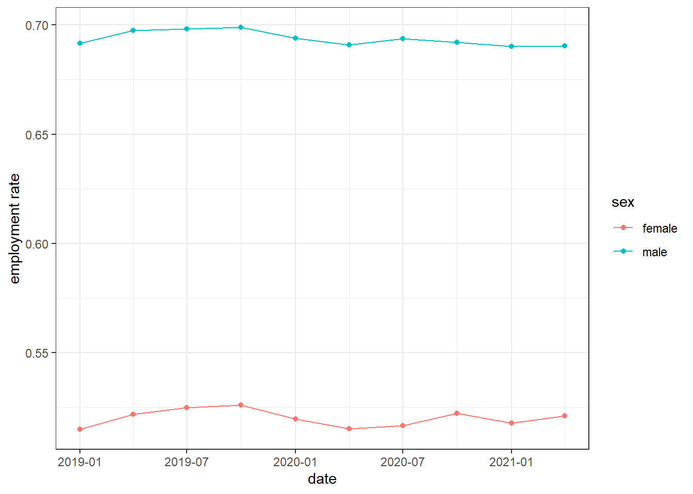
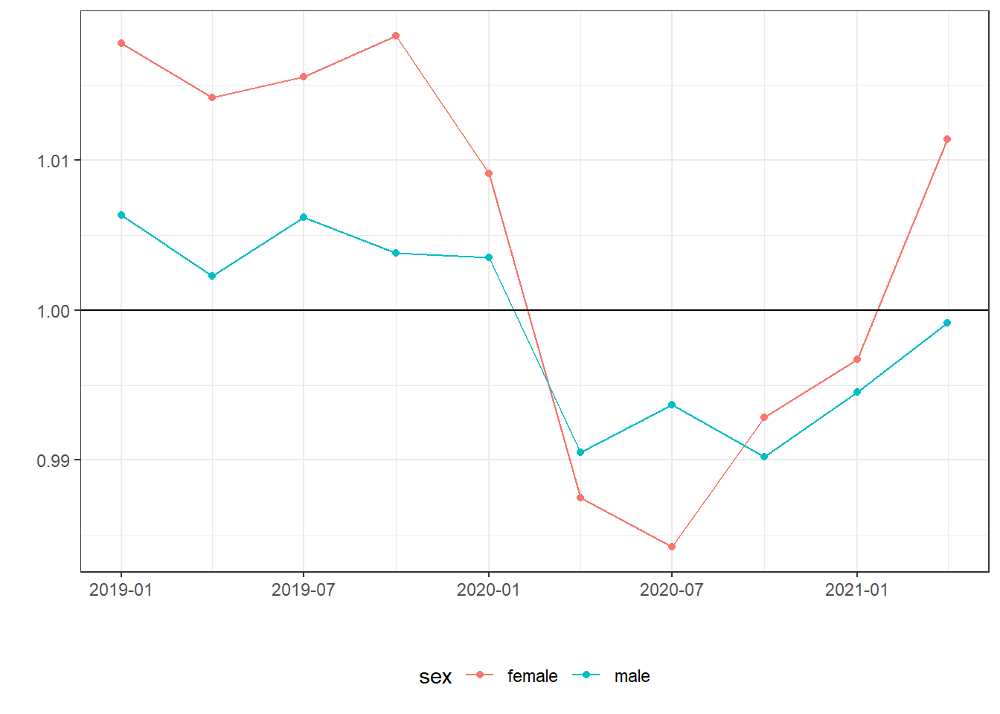
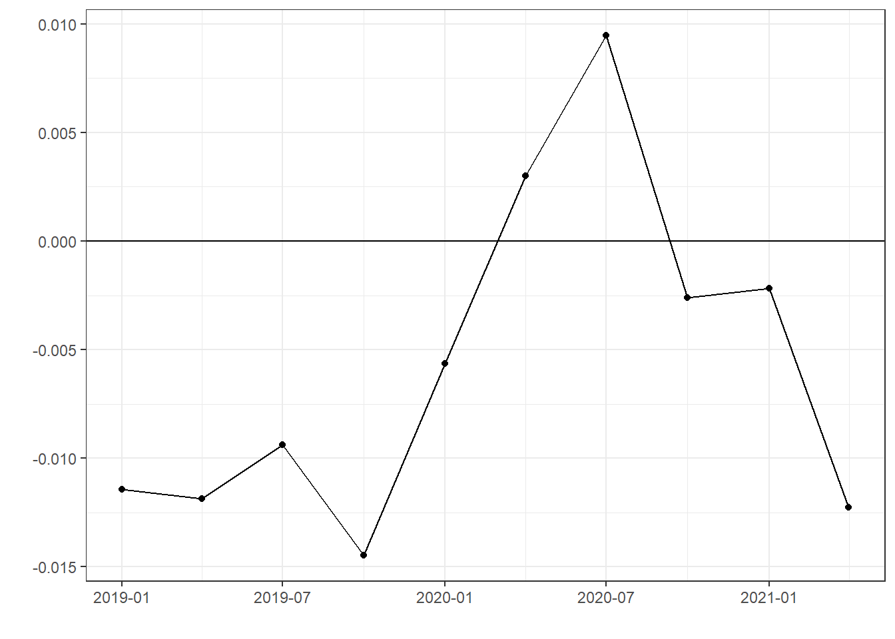

Chapter 3 Simple description: Short run
- Describe labor market after 2019.
3.1 Environment
3.2 Data
3.3 Employment rate
- Report \(e_{g,m,y} = \frac{Employment_{g,m,y}}{Population_{g,m,y}}\), where \(Employment_{g,m,y}\) and \(Population_{g,m,y}\) are numbers of employment and population over 15 years old in month \(m\), year \(y\) and gender group \(g\), respectively.

3.4 Year-to-year difference of employment rate
- Report change of employment rate \(\tilde e_{g,m,y}=e_{g,m,y}/e_{g,m,y-1}\)

3.5 Gender gap
- Report change of employment rate \(\tilde e_{male,m,y} - \tilde e_{female,m,y}\)
